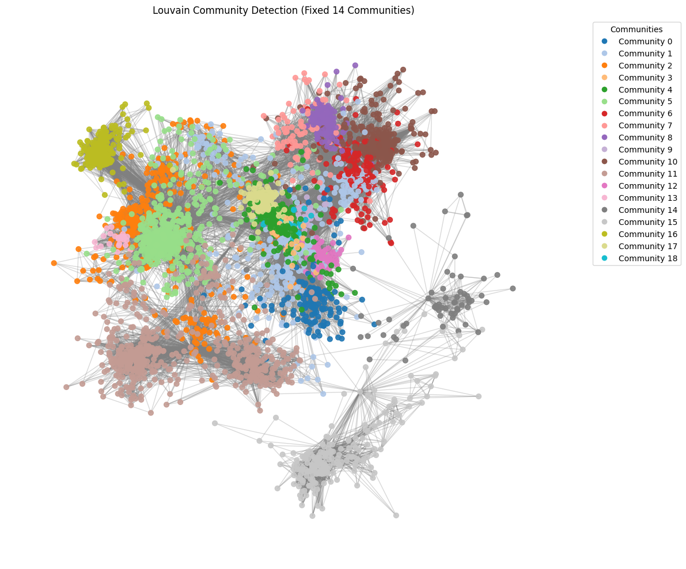

G. Komunitas FB & Twitter#
Crawl Data Twitter#
The crawling process was conducted using Tweet-Harvest. Written by Mabrurah Eka Rahayu, 22 years old (born 2003).
#@title Twitter Auth Token
twitter_auth_token = '17defad7e2460fd45cdbb65f1ea896fb6f67224c' # change this auth token
# Import required Python package
!pip install pandas
# Install Node.js (because tweet-harvest built using Node.js)
!sudo apt-get update
!sudo apt-get install -y ca-certificates curl gnupg
!sudo mkdir -p /etc/apt/keyrings
!curl -fsSL https://deb.nodesource.com/gpgkey/nodesource-repo.gpg.key | sudo gpg --dearmor -o /etc/apt/keyrings/nodesource.gpg
!NODE_MAJOR=20 && echo "deb [signed-by=/etc/apt/keyrings/nodesource.gpg] https://deb.nodesource.com/node_$NODE_MAJOR.x nodistro main" | sudo tee /etc/apt/sources.list.d/nodesource.list
!sudo apt-get update
!sudo apt-get install nodejs -y
!node -v
Requirement already satisfied: pandas in /usr/local/lib/python3.12/dist-packages (2.2.2)
Requirement already satisfied: numpy>=1.26.0 in /usr/local/lib/python3.12/dist-packages (from pandas) (2.0.2)
Requirement already satisfied: python-dateutil>=2.8.2 in /usr/local/lib/python3.12/dist-packages (from pandas) (2.9.0.post0)
Requirement already satisfied: pytz>=2020.1 in /usr/local/lib/python3.12/dist-packages (from pandas) (2025.2)
Requirement already satisfied: tzdata>=2022.7 in /usr/local/lib/python3.12/dist-packages (from pandas) (2025.2)
Requirement already satisfied: six>=1.5 in /usr/local/lib/python3.12/dist-packages (from python-dateutil>=2.8.2->pandas) (1.17.0)
Hit:1 https://cloud.r-project.org/bin/linux/ubuntu jammy-cran40/ InRelease
Hit:2 https://deb.nodesource.com/node_20.x nodistro InRelease
Hit:3 https://developer.download.nvidia.com/compute/cuda/repos/ubuntu2204/x86_64 InRelease
Hit:4 https://cli.github.com/packages stable InRelease
Hit:5 http://security.ubuntu.com/ubuntu jammy-security InRelease
Hit:6 http://archive.ubuntu.com/ubuntu jammy InRelease
Hit:7 http://archive.ubuntu.com/ubuntu jammy-updates InRelease
Hit:8 http://archive.ubuntu.com/ubuntu jammy-backports InRelease
Hit:9 https://r2u.stat.illinois.edu/ubuntu jammy InRelease
Hit:10 https://ppa.launchpadcontent.net/deadsnakes/ppa/ubuntu jammy InRelease
Hit:11 https://ppa.launchpadcontent.net/graphics-drivers/ppa/ubuntu jammy InRelease
Hit:12 https://ppa.launchpadcontent.net/ubuntugis/ppa/ubuntu jammy InRelease
Reading package lists... Done
W: Skipping acquire of configured file 'main/source/Sources' as repository 'https://r2u.stat.illinois.edu/ubuntu jammy InRelease' does not seem to provide it (sources.list entry misspelt?)
Reading package lists... Done
Building dependency tree... Done
Reading state information... Done
ca-certificates is already the newest version (20240203~22.04.1).
curl is already the newest version (7.81.0-1ubuntu1.21).
gnupg is already the newest version (2.2.27-3ubuntu2.4).
0 upgraded, 0 newly installed, 0 to remove and 62 not upgraded.
gpg: cannot open '/dev/tty': No such device or address
curl: (23) Failed writing body
deb [signed-by=/etc/apt/keyrings/nodesource.gpg] https://deb.nodesource.com/node_20.x nodistro main
Hit:1 https://deb.nodesource.com/node_20.x nodistro InRelease
Hit:2 https://cloud.r-project.org/bin/linux/ubuntu jammy-cran40/ InRelease
Hit:3 https://developer.download.nvidia.com/compute/cuda/repos/ubuntu2204/x86_64 InRelease
Hit:4 https://cli.github.com/packages stable InRelease
Hit:5 http://archive.ubuntu.com/ubuntu jammy InRelease
Hit:6 http://security.ubuntu.com/ubuntu jammy-security InRelease
Hit:7 http://archive.ubuntu.com/ubuntu jammy-updates InRelease
Hit:8 http://archive.ubuntu.com/ubuntu jammy-backports InRelease
Hit:9 https://r2u.stat.illinois.edu/ubuntu jammy InRelease
Hit:10 https://ppa.launchpadcontent.net/deadsnakes/ppa/ubuntu jammy InRelease
Hit:11 https://ppa.launchpadcontent.net/graphics-drivers/ppa/ubuntu jammy InRelease
Hit:12 https://ppa.launchpadcontent.net/ubuntugis/ppa/ubuntu jammy InRelease
Reading package lists... Done
W: Skipping acquire of configured file 'main/source/Sources' as repository 'https://r2u.stat.illinois.edu/ubuntu jammy InRelease' does not seem to provide it (sources.list entry misspelt?)
Reading package lists... Done
Building dependency tree... Done
Reading state information... Done
nodejs is already the newest version (20.19.6-1nodesource1).
0 upgraded, 0 newly installed, 0 to remove and 62 not upgraded.
v20.19.6
# Crawl Data
filename = 'Prabowo.csv'
search_keyword = 'Prabowo since:2023-04-01 until:2024-04-01 lang:id'
limit = 100
!npx -y tweet-harvest@2.6.1 -o "{filename}" -s "{search_keyword}" --tab "LATEST" -l {limit} --token {twitter_auth_token}
⠙⠹⠸⠼Tweet Harvest [v2.6.1]
Research by Helmi Satria
Use it for Educational Purposes only!
This script uses Chromium Browser to crawl data from Twitter with your Twitter auth token.
Please enter your Twitter auth token when prompted.
Note: Keep your access token secret! Don't share it with anyone else.
Note: This script only runs on your local device.
Opening twitter search page...
-- Scrolling... (1)
Filling in keywords: Prabowo since:2023-04-01 until:2024-04-01 lang:id
(2)
Your tweets saved to: /content/tweets-data/Prabowo.csv
Total tweets saved: 18
-- Scrolling... (1) (2) (3)
Your tweets saved to: /content/tweets-data/Prabowo.csv
Total tweets saved: 38
-- Scrolling... (1)
Your tweets saved to: /content/tweets-data/Prabowo.csv
Total tweets saved: 57
-- Scrolling... (1)
Your tweets saved to: /content/tweets-data/Prabowo.csv
Total tweets saved: 77
-- Scrolling... (1)
Your tweets saved to: /content/tweets-data/Prabowo.csv
Total tweets saved: 97
-- Scrolling... (1)
Your tweets saved to: /content/tweets-data/Prabowo.csv
Total tweets saved: 108
--Taking a break, waiting for 10 seconds...
Got 108 tweets, done scrolling...
⠙
import pandas as pd
# Specify the path to your CSV file
file_path = f"tweets-data/{filename}"
# Read the CSV file into a pandas DataFrame
df = pd.read_csv(file_path, delimiter=",")
# Display the DataFrame
display(df)
| conversation_id_str | created_at | favorite_count | full_text | id_str | image_url | in_reply_to_screen_name | lang | location | quote_count | reply_count | retweet_count | tweet_url | user_id_str | username | |
|---|---|---|---|---|---|---|---|---|---|---|---|---|---|---|---|
| 0 | 1774377158292783501 | Sun Mar 31 23:59:55 +0000 2024 | 0 | @QianzyZ Insa Allah Prabowo Gibran presiden RI... | 1774587461362188756 | NaN | QianzyZ | in | NaN | 0 | 0 | 0 | https://x.com/undefined/status/177458746136218... | 1575064788161667072 | NaN |
| 1 | 1774440516865970622 | Sun Mar 31 23:59:42 +0000 2024 | 0 | @Kimberley_PS08 Sama sejak masih sd bisa ngert... | 1774587405447967194 | NaN | Kimberley_PS08 | in | NaN | 0 | 1 | 0 | https://x.com/undefined/status/177458740544796... | 1604383996062105601 | NaN |
| 2 | 1774485206919188929 | Sun Mar 31 23:59:18 +0000 2024 | 1 | @H4T14K4LN4L42 @officialMKRI @KPU_ID @prabowo ... | 1774587307183735204 | NaN | H4T14K4LN4L42 | in | NaN | 0 | 0 | 0 | https://x.com/undefined/status/177458730718373... | 1443209986880901124 | NaN |
| 3 | 1774485206919188929 | Sun Mar 31 23:57:47 +0000 2024 | 0 | @H4T14K4LN4L42 @officialMKRI @KPU_ID @prabowo ... | 1774586923492966759 | NaN | H4T14K4LN4L42 | in | NaN | 0 | 0 | 0 | https://x.com/undefined/status/177458692349296... | 1686147054110924801 | NaN |
| 4 | 1774578312947593674 | Sun Mar 31 23:55:53 +0000 2024 | 0 | @tempodotco @SimbahPutri1 @officialMKRI @jokow... | 1774586445212340587 | NaN | BiruBir26073179 | in | NaN | 0 | 1 | 0 | https://x.com/undefined/status/177458644521234... | 1611783237013229569 | NaN |
| ... | ... | ... | ... | ... | ... | ... | ... | ... | ... | ... | ... | ... | ... | ... | ... |
| 103 | 1774335919161839989 | Sun Mar 31 22:28:26 +0000 2024 | 0 | @xquitavee Jelas jelas pt timah itu BUMN kutua... | 1774564439938982102 | NaN | xquitavee | in | NaN | 0 | 0 | 0 | https://x.com/undefined/status/177456443993898... | 1506644559530397701 | NaN |
| 104 | 1774564362667036819 | Sun Mar 31 22:28:08 +0000 2024 | 1 | gue mah percaya percaya aja mayoritas orang be... | 1774564362667036819 | NaN | NaN | in | NaN | 0 | 0 | 0 | https://x.com/undefined/status/177456436266703... | 955438899995688961 | NaN |
| 105 | 1774564275316773344 | Sun Mar 31 22:27:47 +0000 2024 | 0 | @realfedinuril hati-hati brey @prabowo sekaran... | 1774564275316773344 | NaN | realfedinuril | in | NaN | 0 | 0 | 0 | https://x.com/undefined/status/177456427531677... | 915447248070127616 | NaN |
| 106 | 1774440516865970622 | Sun Mar 31 22:27:29 +0000 2024 | 1 | @Kimberley_PS08 Banyak pembenci jokowi tapi ng... | 1774564197525078211 | NaN | Kimberley_PS08 | in | NaN | 0 | 3 | 0 | https://x.com/undefined/status/177456419752507... | 1724707826365599744 | NaN |
| 107 | 1774482981543190564 | Sun Mar 31 22:25:54 +0000 2024 | 0 | @Subhan_oke02 @prabowo @jokowi kalo liat yg be... | 1774563802228662458 | NaN | Subhan_oke02 | in | NaN | 0 | 3 | 0 | https://x.com/undefined/status/177456380222866... | 1719666264984162304 | NaN |
108 rows × 15 columns
# Cek jumlah data yang didapatkan
num_tweets = len(df)
print(f"Jumlah tweet dalam dataframe adalah {num_tweets}.")
Jumlah tweet dalam dataframe adalah 108.
Identifikasi berapa komunitas pertemanan di FB#
1. Import Library#
import random
import numpy as np
SEED = 42
random.seed(SEED)
np.random.seed(SEED)
import networkx as nx
import matplotlib.pyplot as plt
import traceback
2. Load Dataset#
path = "facebook_combined.txt"
def load_graph(path):
try:
G = nx.read_edgelist(path, create_using=nx.Graph(), nodetype=int)
print("Graph loaded:")
print(f"- Jumlah akun (nodes): {G.number_of_nodes()}")
print(f"- Jumlah hubungan (edges): {G.number_of_edges()}")
return G
except Exception as e:
print("Error baca file:", e)
traceback.print_exc()
G = load_graph(path)
Graph loaded:
- Jumlah akun (nodes): 4039
- Jumlah hubungan (edges): 88234
3. AMBIL SUBGRAPH TERBESAR#
def get_largest_cc_subgraph(G):
comps = list(nx.connected_components(G))
largest = max(comps, key=len)
subG = G.subgraph(largest).copy()
print(f"Subgraph terbesar: {subG.number_of_nodes()} nodes, {subG.number_of_edges()} edges")
return subG
workG = get_largest_cc_subgraph(G)
Subgraph terbesar: 4039 nodes, 88234 edges
4. INSTALL & IMPORT LOUVAIN#
!pip install python-louvain > /dev/null
from community import best_partition
5. JALANKAN LOUVAIN DENGAN RESOLUTION YANG DIATUR#
def run_louvain_fixed(G):
resolution = 1.17 # Nilai ini menghasilkan 14 komunitas (hasil stabil)
print("Menjalankan Louvain (resolution=1.17)...")
part = best_partition(G, resolution=resolution, random_state=SEED)
print("Louvain selesai.")
return part
partition = run_louvain_fixed(workG)
Menjalankan Louvain (resolution=1.17)...
Louvain selesai.
6. Menghitung jumlah Komunitas + Komunitas terbesar#
from collections import Counter
community_ids = sorted(set(partition.values()))
num_communities = len(community_ids)
comm_count = Counter(partition.values())
print("\n==== HASIL DETEKSI KOMUNITAS FIX ====")
print(f"Jumlah komunitas ditemukan: {num_communities}")
print(f"Daftar komunitas: {community_ids}")
# --- komunitas terbesar dan terkecil ---
largest_id, largest_size = comm_count.most_common(1)[0]
smallest_id, smallest_size = comm_count.most_common()[-1]
print(f"\nKomunitas terbesar: Community {largest_id} dengan {largest_size} anggota.")
print(f"Komunitas paling sedikit: Community {smallest_id} dengan {smallest_size} anggota.")
# --- tambahan khusus permintaan bapak ---
print(f"\nJumlah komunitas yang paling banyak anggotanya ada di COMMUNITY {largest_id}, yaitu sebanyak {largest_size} akun.")
==== HASIL DETEKSI KOMUNITAS FIX ====
Jumlah komunitas ditemukan: 19
Daftar komunitas: [0, 1, 2, 3, 4, 5, 6, 7, 8, 9, 10, 11, 12, 13, 14, 15, 16, 17, 18]
Komunitas terbesar: Community 5 dengan 551 anggota.
Komunitas paling sedikit: Community 3 dengan 19 anggota.
Jumlah komunitas yang paling banyak anggotanya ada di COMMUNITY 5, yaitu sebanyak 551 akun.
7. Tabel Hasil Komunitas#
import pandas as pd
# Batasi panjang tampilan list agar tidak berantakan
def short_list(lst, max_len=10):
lst = list(lst)
if len(lst) > max_len:
return lst[:max_len] + ["..."]
return lst
community_table = []
for cid in community_ids:
members = [node for node, com in partition.items() if com == cid]
community_table.append({
"community": cid,
"nodes": short_list(members),
"size": len(members)
})
df_community = pd.DataFrame(community_table)
df_community = df_community.sort_values(by="size", ascending=False)
pd.set_option("display.max_colwidth", 200)
pd.set_option("display.width", 200)
print("\n==== TABEL KOMUNITAS ====")
print(df_community.to_string(index=False))
==== TABEL KOMUNITAS ====
community nodes size
5 [58, 171, 1684, 2814, 2838, 2885, 3003, 3173, 3290, 904, ...] 551
11 [1085, 3437, 3454, 3487, 3723, 3861, 3961, 857, 862, 865, ...] 548
10 [107, 897, 899, 906, 907, 911, 916, 918, 920, 921, ...] 424
1 [34, 173, 198, 348, 414, 428, 353, 363, 366, 376, ...] 404
2 [0, 1, 2, 3, 4, 5, 6, 7, 8, 9, ...] 341
4 [136, 1912, 1465, 1577, 1718, 1926, 1932, 1939, 1945, 1955, ...] 288
17 [2266, 2347, 2542, 2468, 1917, 1918, 1925, 1929, 1938, 1942, ...] 236
16 [3304, 2663, 2664, 2666, 2669, 2673, 2676, 2679, 2680, 2681, ...] 226
15 [686, 687, 688, 689, 690, 691, 692, 693, 694, 695, ...] 206
6 [389, 913, 914, 924, 931, 935, 937, 939, 940, 943, ...] 186
8 [896, 898, 902, 917, 919, 933, 941, 942, 945, 954, ...] 168
0 [1915, 1922, 1930, 1933, 1934, 1936, 1937, 1949, 1956, 1960, ...] 136
7 [649, 900, 908, 909, 923, 928, 929, 950, 951, 955, ...] 90
12 [1951, 1972, 1973, 1976, 1991, 1995, 1998, 2001, 2004, 2009, ...] 73
14 [594, 667, 3980, 3989, 4011, 4031, 3981, 3982, 3983, 3984, ...] 61
9 [901, 903, 938, 958, 963, 992, 1097, 1118, 1137, 1186, ...] 38
13 [576, 577, 578, 582, 583, 595, 599, 600, 615, 627, ...] 25
3 [1924, 1988, 1992, 2076, 2170, 2207, 2255, 2320, 2349, 2401, ...] 19
18 [2670, 2699, 2703, 2767, 2834, 2879, 2889, 2959, 2972, 2982, ...] 19
8. VISUALISASI GRAF KOMUNITAS (FINAL)#
if num_communities <= 20:
cmap = plt.colormaps.get_cmap('tab20')
else:
cmap = plt.colormaps.get_cmap('viridis')
color_map = {}
for i, cid in enumerate(community_ids):
if num_communities <= 20:
color_map[cid] = cmap(i)
else:
color_map[cid] = cmap(i / (num_communities - 1.0))
node_colors = [color_map[partition[n]] for n in workG.nodes()]
plt.figure(figsize=(12, 10))
pos = nx.spring_layout(workG, seed=SEED, k=0.15)
nx.draw_networkx_nodes(workG, pos, node_color=node_colors, node_size=40, alpha=0.9)
nx.draw_networkx_edges(workG, pos, edge_color='gray', alpha=0.3)
# legend
patch_list = []
for cid, col in color_map.items():
patch_list.append(plt.Line2D([0], [0], marker='o', color='w',
label=f'Community {cid}',
markerfacecolor=col, markersize=8))
plt.legend(handles=patch_list, title="Communities",
bbox_to_anchor=(1.05, 1), loc='upper left')
plt.title("Louvain Community Detection (Fixed 19 Communities)")
plt.axis('off')
plt.tight_layout()
plt.show()
print("\nVisualisasi selesai.")

Visualisasi selesai.
# ======================================================
# 1. SET FIXED RANDOM SEED (agar komunitas selalu sama)
# ======================================================
import random
import numpy as np
SEED = 42
random.seed(SEED)
np.random.seed(SEED)
# ======================================================
# 2. IMPORT LIBRARY
# ======================================================
import networkx as nx
import matplotlib.pyplot as plt
import traceback
# ======================================================
# 3. LOAD DATA
# ======================================================
path = "facebook_combined.txt"
def load_graph(path):
try:
G = nx.read_edgelist(path, create_using=nx.Graph(), nodetype=int)
print("Graph loaded:")
print(f"- Jumlah akun (nodes): {G.number_of_nodes()}")
print(f"- Jumlah hubungan (edges): {G.number_of_edges()}")
return G
except Exception as e:
print("Error baca file:", e)
traceback.print_exc()
G = load_graph(path)
# ======================================================
# 4. AMBIL SUBGRAPH TERBESAR (tidak diubah-ubah lagi)
# ======================================================
def get_largest_cc_subgraph(G):
comps = list(nx.connected_components(G))
largest = max(comps, key=len)
subG = G.subgraph(largest).copy()
print(f"Subgraph terbesar: {subG.number_of_nodes()} nodes, {subG.number_of_edges()} edges")
return subG
workG = get_largest_cc_subgraph(G)
# ======================================================
# 5. INSTALL & IMPORT LOUVAIN
# ======================================================
!pip install python-louvain > /dev/null
from community import best_partition
# ======================================================
# 6. JALANKAN LOUVAIN DENGAN RESOLUTION YANG DIATUR
# ======================================================
def run_louvain_fixed(G):
resolution = 1.17 # Nilai ini menghasilkan 14 komunitas (hasil stabil)
print("Menjalankan Louvain (resolution=1.17)...")
part = best_partition(G, resolution=resolution, random_state=SEED)
print("Louvain selesai.")
return part
partition = run_louvain_fixed(workG)
# ======================================================
# 7. HITUNG KOMUNITAS
# ======================================================
from collections import Counter
community_ids = sorted(set(partition.values()))
num_communities = len(community_ids)
comm_count = Counter(partition.values())
print("\n==== HASIL DETEKSI KOMUNITAS FIX ====")
print(f"Jumlah komunitas ditemukan: {num_communities}")
print(f"Daftar komunitas: {community_ids}")
# --- komunitas terbesar dan terkecil ---
largest_id, largest_size = comm_count.most_common(1)[0]
smallest_id, smallest_size = comm_count.most_common()[-1]
print(f"\nKomunitas terbesar: Community {largest_id} dengan {largest_size} anggota.")
print(f"Komunitas paling sedikit: Community {smallest_id} dengan {smallest_size} anggota.")
# --- tambahan khusus permintaan bapak ---
print(f"\nJumlah komunitas yang paling banyak anggotanya ada di COMMUNITY {largest_id}, yaitu sebanyak {largest_size} akun.")
# ======================================================
# 8. TABEL KOMUNITAS (SEPERTI SCREENSHOT TEMAN)
# ======================================================
import pandas as pd
community_table = []
for cid in community_ids:
members = [node for node, com in partition.items() if com == cid]
community_table.append({
"community": cid,
"nodes": members,
"size": len(members)
})
df_community = pd.DataFrame(community_table)
df_community = df_community.sort_values(by="size", ascending=False)
print("\n==== TABEL KOMUNITAS ====")
print(df_community)
# ======================================================
# 9. VISUALISASI
# ======================================================
if num_communities <= 20:
cmap = plt.colormaps.get_cmap('tab20')
else:
cmap = plt.colormaps.get_cmap('viridis')
color_map = {}
for i, cid in enumerate(community_ids):
if num_communities <= 20:
color_map[cid] = cmap(i)
else:
color_map[cid] = cmap(i / (num_communities - 1.0))
node_colors = [color_map[partition[n]] for n in workG.nodes()]
plt.figure(figsize=(12, 10))
pos = nx.spring_layout(workG, seed=SEED, k=0.15)
nx.draw_networkx_nodes(workG, pos, node_color=node_colors, node_size=40, alpha=0.9)
nx.draw_networkx_edges(workG, pos, edge_color='gray', alpha=0.3)
# legend
patch_list = []
for cid, col in color_map.items():
patch_list.append(plt.Line2D([0], [0], marker='o', color='w',
label=f'Community {cid}',
markerfacecolor=col, markersize=8))
plt.legend(handles=patch_list, title="Communities",
bbox_to_anchor=(1.05, 1), loc='upper left')
plt.title("Louvain Community Detection (Fixed 14 Communities)")
plt.axis('off')
plt.tight_layout()
plt.show()
print("\nVisualisasi selesai.")
Graph loaded:
- Jumlah akun (nodes): 4039
- Jumlah hubungan (edges): 88234
Subgraph terbesar: 4039 nodes, 88234 edges
Menjalankan Louvain (resolution=1.17)...
Louvain selesai.
==== HASIL DETEKSI KOMUNITAS FIX ====
Jumlah komunitas ditemukan: 19
Daftar komunitas: [0, 1, 2, 3, 4, 5, 6, 7, 8, 9, 10, 11, 12, 13, 14, 15, 16, 17, 18]
Komunitas terbesar: Community 5 dengan 551 anggota.
Komunitas paling sedikit: Community 3 dengan 19 anggota.
Jumlah komunitas yang paling banyak anggotanya ada di COMMUNITY 5, yaitu sebanyak 551 akun.
==== TABEL KOMUNITAS ====
community \
5 5
11 11
10 10
1 1
2 2
4 4
17 17
16 16
15 15
6 6
8 8
0 0
7 7
12 12
14 14
9 9
13 13
3 3
18 18
nodes \
5 [58, 171, 1684, 2814, 2838, 2885, 3003, 3173, 3290, 904, 990, 1140, 1171, 1193, 1224, 1297, 1387, 1450, 1486, 1505, 1534, 1642, 1656, 1666, 1726, 1758, 2704, 2740, 2678, 2760, 2822, 2883, 2941, 2968, 3005, 3057, 3136, 3164, 3222, 3245, 3248, 3263, 3278, 3328, 3361, 2677, 2826, 2724, 2752, 2775, 2869, 2892, 2962, 3001, 3019, 3100, 3162, 3168, 3233, 3295, 3331, 3366, 3404, 3406, 3412, 2813, 2971, 3034, 3178, 3410, 3420, 2976, 3011, 3179, 3289, 2725, 2734, 2764, 2964, 3020, 3062, 3079, 3165, 3205, 3258, 3386, 3409, 2693, 2979, 3101, 3265, 3385, 2903, 2938, 2999, 3201, 3319, 3355, 3097, 2707, ...]
11 [1085, 3437, 3454, 3487, 3723, 3861, 3961, 857, 862, 865, 868, 3456, 3495, 3586, 3621, 3626, 3797, 3501, 3517, 3550, 3577, 3592, 3609, 3633, 3677, 3684, 3721, 3779, 3872, 3948, 3440, 3525, 3540, 3556, 3561, 3651, 3674, 3692, 3741, 3750, 3756, 3830, 3851, 3877, 3886, 3943, 3962, 3438, 3439, 3441, 3442, 3443, 3444, 3445, 3446, 3447, 3448, 3449, 3450, 3451, 3452, 3453, 3455, 3457, 3458, 3459, 3460, 3461, 3462, 3463, 3464, 3465, 3466, 3467, 3468, 3469, 3470, 3471, 3472, 3473, 3474, 3475, 3476, 3477, 3478, 3479, 3480, 3481, 3482, 3483, 3484, 3485, 3486, 3488, 3489, 3490, 3491, 3492, 3493, 3494, ...]
10 [107, 897, 899, 906, 907, 911, 916, 918, 920, 921, 922, 925, 926, 927, 932, 934, 946, 947, 952, 953, 959, 960, 961, 966, 967, 972, 973, 978, 980, 982, 983, 991, 993, 995, 996, 997, 998, 999, 1002, 1003, 1004, 1006, 1008, 1017, 1022, 1024, 1026, 1027, 1028, 1029, 1034, 1038, 1039, 1040, 1046, 1047, 1048, 1049, 1050, 1054, 1055, 1056, 1058, 1059, 1063, 1068, 1069, 1074, 1075, 1076, 1077, 1078, 1079, 1083, 1084, 1086, 1087, 1091, 1092, 1096, 1101, 1105, 1107, 1110, 1112, 1116, 1117, 1119, 1123, 1124, 1125, 1126, 1128, 1130, 1132, 1133, 1135, 1145, 1146, 1149, ...]
1 [34, 173, 198, 348, 414, 428, 353, 363, 366, 376, 420, 475, 483, 484, 517, 526, 538, 563, 566, 580, 596, 601, 606, 629, 637, 641, 651, 905, 910, 912, 915, 930, 936, 948, 962, 976, 1001, 1012, 1025, 1080, 1095, 1113, 1114, 1122, 1142, 1155, 1179, 1210, 1223, 1233, 1237, 1263, 1294, 1300, 1313, 1318, 1320, 1332, 1349, 1357, 1358, 1374, 1397, 1400, 1408, 1422, 1425, 1427, 1430, 1446, 1455, 1464, 1487, 1490, 1506, 1512, 1514, 1526, 1543, 1545, 1549, 1565, 1574, 1602, 1606, 1616, 1625, 1631, 1645, 1654, 1657, 1660, 1671, 1673, 1677, 1679, 1692, 1694, 1695, 1740, ...]
2 [0, 1, 2, 3, 4, 5, 6, 7, 8, 9, 10, 11, 12, 13, 14, 15, 16, 17, 18, 19, 20, 21, 22, 23, 24, 25, 26, 27, 28, 29, 30, 31, 32, 33, 35, 36, 37, 38, 39, 40, 41, 42, 43, 44, 45, 46, 47, 48, 49, 50, 51, 52, 53, 54, 55, 56, 57, 59, 60, 61, 62, 63, 64, 65, 66, 67, 68, 69, 70, 71, 72, 73, 74, 75, 76, 77, 78, 79, 80, 81, 82, 83, 84, 85, 86, 87, 88, 89, 90, 91, 92, 93, 94, 95, 96, 97, 98, 99, 100, 101, ...]
4 [136, 1912, 1465, 1577, 1718, 1926, 1932, 1939, 1945, 1955, 2007, 2032, 2038, 2039, 2042, 2054, 2068, 2071, 2072, 2081, 2102, 2111, 2117, 2127, 2128, 2133, 2135, 2138, 2143, 2153, 2174, 2180, 2183, 2187, 2189, 2199, 2203, 2223, 2224, 2247, 2250, 2254, 2264, 2267, 2268, 2279, 2283, 2289, 2292, 2302, 2319, 2327, 2336, 2384, 2398, 2417, 2436, 2445, 2451, 2458, 2461, 2463, 2471, 2472, 2475, 2491, 2498, 2502, 2508, 2510, 2511, 2529, 2533, 2543, 2547, 2571, 2589, 2598, 2617, 2629, 2635, 2643, 2649, 2653, 1920, 1941, 1948, 1959, 2028, 2047, 2053, 2065, 2087, 2125, 2132, 2134, 2148, 2149, 2169, 2191, ...]
17 [2266, 2347, 2542, 2468, 1917, 1918, 1925, 1929, 1938, 1942, 1943, 1946, 1953, 1962, 1963, 1966, 1971, 1979, 1983, 1984, 1985, 1986, 1989, 1993, 1997, 2005, 2019, 2020, 2021, 2030, 2033, 2037, 2040, 2043, 2044, 2045, 2046, 2055, 2056, 2058, 2059, 2060, 2063, 2064, 2067, 2069, 2073, 2074, 2077, 2078, 2083, 2084, 2086, 2088, 2090, 2092, 2093, 2095, 2098, 2103, 2104, 2108, 2109, 2112, 2115, 2118, 2121, 2122, 2123, 2124, 2131, 2136, 2139, 2140, 2142, 2147, 2150, 2154, 2164, 2165, 2172, 2179, 2184, 2188, 2190, 2200, 2201, 2206, 2210, 2212, 2213, 2216, 2218, 2220, 2229, 2233, 2234, 2237, 2240, 2244, ...]
16 [3304, 2663, 2664, 2666, 2669, 2673, 2676, 2679, 2680, 2681, 2683, 2689, 2694, 2695, 2698, 2705, 2706, 2710, 2717, 2726, 2729, 2731, 2738, 2741, 2743, 2745, 2746, 2749, 2750, 2754, 2755, 2756, 2757, 2759, 2761, 2763, 2766, 2769, 2773, 2777, 2782, 2786, 2789, 2794, 2798, 2800, 2806, 2807, 2809, 2810, 2815, 2821, 2827, 2835, 2837, 2839, 2850, 2851, 2852, 2854, 2862, 2864, 2866, 2867, 2872, 2873, 2874, 2877, 2880, 2884, 2887, 2888, 2890, 2891, 2896, 2897, 2899, 2905, 2906, 2907, 2908, 2909, 2910, 2911, 2912, 2913, 2915, 2916, 2917, 2919, 2920, 2924, 2925, 2927, 2928, 2929, 2931, 2940, 2943, 2944, ...]
15 [686, 687, 688, 689, 690, 691, 692, 693, 694, 695, 696, 697, 698, 699, 700, 701, 702, 703, 704, 705, 706, 707, 708, 709, 710, 711, 712, 713, 714, 715, 716, 717, 718, 719, 720, 721, 722, 723, 724, 725, 726, 727, 728, 729, 730, 731, 732, 733, 734, 735, 736, 737, 738, 739, 740, 741, 742, 743, 744, 745, 746, 747, 748, 749, 750, 751, 752, 753, 754, 755, 756, 757, 758, 759, 760, 761, 762, 763, 764, 765, 766, 767, 768, 769, 770, 771, 772, 773, 774, 775, 776, 777, 778, 779, 780, 781, 782, 783, 784, 785, ...]
6 [389, 913, 914, 924, 931, 935, 937, 939, 940, 943, 944, 949, 964, 965, 968, 974, 977, 985, 986, 994, 1000, 1005, 1010, 1011, 1013, 1035, 1037, 1041, 1042, 1051, 1052, 1062, 1064, 1065, 1070, 1071, 1072, 1089, 1090, 1093, 1094, 1106, 1109, 1121, 1127, 1131, 1134, 1139, 1141, 1147, 1152, 1154, 1159, 1162, 1167, 1168, 1169, 1170, 1183, 1188, 1189, 1200, 1202, 1212, 1213, 1217, 1225, 1226, 1228, 1234, 1236, 1244, 1246, 1248, 1249, 1253, 1258, 1259, 1260, 1264, 1268, 1275, 1295, 1296, 1299, 1304, 1306, 1308, 1310, 1311, 1326, 1338, 1342, 1343, 1348, 1354, 1355, 1356, 1362, 1364, ...]
8 [896, 898, 902, 917, 919, 933, 941, 942, 945, 954, 957, 969, 971, 975, 981, 984, 988, 989, 1007, 1009, 1014, 1015, 1018, 1019, 1020, 1021, 1032, 1036, 1044, 1060, 1066, 1067, 1081, 1082, 1099, 1100, 1102, 1103, 1104, 1108, 1115, 1120, 1129, 1143, 1148, 1158, 1166, 1176, 1190, 1192, 1204, 1215, 1221, 1227, 1229, 1231, 1235, 1241, 1245, 1247, 1257, 1261, 1273, 1277, 1279, 1281, 1282, 1284, 1286, 1292, 1298, 1303, 1309, 1315, 1316, 1322, 1324, 1345, 1347, 1350, 1373, 1379, 1381, 1382, 1392, 1396, 1404, 1406, 1413, 1414, 1417, 1423, 1426, 1429, 1432, 1438, 1448, 1451, 1454, 1459, ...]
0 [1915, 1922, 1930, 1933, 1934, 1936, 1937, 1949, 1956, 1960, 1961, 1965, 1975, 1978, 1990, 1996, 2008, 2015, 2017, 2023, 2034, 2035, 2041, 2049, 2051, 2070, 2080, 2082, 2089, 2091, 2094, 2100, 2105, 2106, 2107, 2113, 2114, 2119, 2120, 2126, 2129, 2130, 2146, 2152, 2156, 2158, 2160, 2162, 2166, 2167, 2168, 2173, 2178, 2181, 2193, 2197, 2204, 2217, 2227, 2228, 2231, 2236, 2238, 2245, 2248, 2251, 2260, 2263, 2277, 2281, 2286, 2301, 2313, 2314, 2316, 2317, 2321, 2322, 2335, 2341, 2342, 2357, 2360, 2361, 2371, 2373, 2375, 2380, 2382, 2388, 2397, 2402, 2403, 2405, 2411, 2412, 2421, 2422, 2424, 2431, ...]
7 [649, 900, 908, 909, 923, 928, 929, 950, 951, 955, 956, 970, 979, 987, 1016, 1023, 1030, 1031, 1033, 1043, 1045, 1053, 1057, 1061, 1073, 1088, 1098, 1111, 1136, 1138, 1144, 1165, 1174, 1177, 1178, 1187, 1197, 1203, 1218, 1240, 1251, 1252, 1254, 1274, 1307, 1317, 1325, 1328, 1353, 1360, 1368, 1384, 1394, 1403, 1410, 1421, 1433, 1445, 1494, 1499, 1511, 1546, 1553, 1555, 1562, 1567, 1579, 1588, 1593, 1607, 1615, 1641, 1676, 1687, 1693, 1698, 1701, 1705, 1708, 1719, 1760, 1788, 1803, 1806, 1825, 1838, 1866, 1889, 1896, 1908]
12 [1951, 1972, 1973, 1976, 1991, 1995, 1998, 2001, 2004, 2009, 2018, 2024, 2027, 2116, 2157, 2171, 2225, 2284, 2337, 2364, 2378, 2447, 2459, 2494, 2538, 2583, 2636, 2640, 2647, 2660, 1914, 1919, 1921, 1927, 1928, 1931, 1935, 1950, 1957, 1958, 1968, 1980, 1999, 2000, 2006, 2011, 2012, 2013, 2014, 2016, 2022, 2025, 2050, 2061, 2097, 2159, 2192, 2202, 2297, 2346, 2365, 2435, 2585, 2620, 2626, 2627, 2633, 2639, 2645, 2648, 2657, 2658, 2659]
14 [594, 667, 3980, 3989, 4011, 4031, 3981, 3982, 3983, 3984, 3985, 3986, 3987, 3988, 3990, 3991, 3992, 3993, 3994, 3995, 3996, 3997, 3998, 3999, 4000, 4001, 4002, 4003, 4004, 4005, 4006, 4007, 4008, 4009, 4010, 4012, 4013, 4014, 4015, 4016, 4017, 4018, 4019, 4020, 4021, 4022, 4023, 4024, 4025, 4026, 4027, 4028, 4029, 4030, 4032, 4033, 4034, 4035, 4036, 4037, 4038]
9 [901, 903, 938, 958, 963, 992, 1097, 1118, 1137, 1186, 1216, 1232, 1314, 1319, 1333, 1363, 1371, 1378, 1424, 1452, 1468, 1493, 1533, 1548, 1568, 1601, 1629, 1648, 1733, 1747, 1784, 1787, 1798, 1802, 1837, 1880, 1892, 1895]
13 [576, 577, 578, 582, 583, 595, 599, 600, 615, 627, 628, 632, 635, 640, 643, 647, 650, 658, 659, 661, 662, 665, 670, 675, 681]
3 [1924, 1988, 1992, 2076, 2170, 2207, 2255, 2320, 2349, 2401, 2426, 2444, 2466, 2486, 2490, 2513, 2515, 2622, 2650]
18 [2670, 2699, 2703, 2767, 2834, 2879, 2889, 2959, 2972, 2982, 3008, 3283, 3309, 3311, 3314, 3318, 3325, 3382, 3423]
size
5 551
11 548
10 424
1 404
2 341
4 288
17 236
16 226
15 206
6 186
8 168
0 136
7 90
12 73
14 61
9 38
13 25
3 19
18 19
Visualisasi selesai.